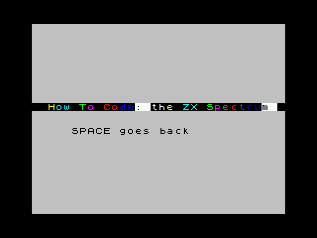

4. Startup and interrupts
Every Spectrum example in this guide is built on one small startup, examples/startup.asm. It takes the machine from BASIC, runs your program once a frame with its own interrupt routine, and gives the machine back to BASIC when you press SPACE, so that BASIC says 0 OK and the Spectrum carries on as if nothing had happened. This chapter explains every part, and the interrupts it's built on.
Interrupts on the Spectrum
The ULA interrupts the Z80 once a frame, 50 times a second, at the start of the frame (chapter 3). It's the only interrupt a standard Spectrum has. What the Z80 does with it depends on its interrupt mode:
- IM 1, which the ROM uses: "the processor simply executes an RST 38 instruction" (<https://worldofspectrum.org/faq/reference/z80reference.htm>), calling the ROM's routine at
$0038. That routine counts the frame in the system variableFRAMES($5C78) and reads the keyboard: "The real time clock is incremented and the keyboard scanned whenever a maskable interrupt occurs" (<https://skoolkid.github.io/rom/asm/0038.html>). It does it withINC (IY+$40), so it relies onIYholding$5C3A, which "is initialised to 5C3A by the routine at NEW" (<https://skoolkid.github.io/rom/asm/5C3A.html>). A program that usesIYwith interrupts on in IM 1 has the ROM write a byte 64 past whereverIYpoints, 50 times a second. - IM 2: the Z80 makes an address from the
Iregister (the high byte) and a byte read from the data bus (the low byte), reads a word from there, and calls it. That's how a program gets its own interrupt routine. - IM 0 reads an instruction from the bus. On a Spectrum nothing puts one there.
IM 2 and the vector table
Which byte is on the bus when the Z80 asks? "The normal Spectrum contains no hardware to place a byte on the bus, and the bus will therefore always read FF", but "some not-so-neat hardware devices put things on the data bus when they shouldn't" (Z80 reference). So the usual way, and the startup's, is to make the answer not matter: a table of 257 bytes, all the same, starting at I × 256. Whatever byte comes off the bus, the word read from the table has the same high and low byte, here $BFBF, and at $BFBF the startup puts a JP to its routine.
Where the table goes matters:
- Not in contended memory (
$4000–$7FFF), becauseIwould then be$40–$7F, and that makes "snow" on a 48K and can crash a 128K (chapter 3). - Not where a 128K pages banks (
$C000up), or it vanishes when another bank is paged in.
So the startup keeps it at $BE00–$BF00, with the jump at $BFBF and its stack below at $BC00–$BDFF, all in the top of bank 2, which is at $8000 on every model (in the usual paging: the +2A and +3 have others, chapter 8).
The startup
AUTOEXIT equ 0 ; frames before going back to BASIC: 0 for never (SPACE goes back too)
device zxspectrum48
include "startup.asm"
Init: ; once, interrupts off
...
Frame: ; once a frame, after the interrupt, in the main loop
...
Interrupt: ; in the interrupt itself, at the same time every frame
...Your program defines three routines, and may change any register in them but SP and I. The startup's code starts at $8000, so the tape's loader calls it there. In order, it:
- Disables interrupts and keeps what BASIC needs back: its stack pointer, and
H'L', the alternateHL. BASIC called your code from inside the ROM's calculator, which keeps its place inH'L'("This saves the pointer to the first literal", <https://skoolkid.github.io/rom/asm/335B.html>), so a program that returns to BASIC withH'L'changed returns into a lost calculator. - Moves the stack to
$BE00, out of contended RAM (BASIC's stack is just belowRAMTOP, at$7FFFor so). - Finds out what it's running on (
FindMachine): writes a mark at$C000, pages in another bank through port$7FFD, writes a second mark, pages the first bank back, and looks. On a 128K the first mark is still there; on a 48K, which has nothing at port$7FFD, both went to the same byte. It setsIs128, andLineTimeto 224 or 228 T-states (chapter 8 has more on telling the models apart). - Builds the vector table with
LDIR, writesJP IntHandlerat$BFBF, setsIto$BE, and selectsIM 2. - Calls
Init, enables interrupts, and enters the main loop:
MainLoop:
halt ; wait for the next frame's interrupt
call Frame
ld a,$7F ; the half-row SPACE, SYM SHIFT, M, N, B
in a,($FE)
rra ; SPACE is bit 0, 0 when it's pressed
jr nc,Exit
... ; and AUTOEXIT, if it's set
jr MainLoopHALT stops the Z80 until an interrupt; when the interrupt routine returns, Frame runs. If Frame takes longer than a frame, the next HALT waits for the interrupt after, and the program runs at 25 frames a second rather than crashing: the frame rate halves, nothing else changes.
The interrupt routine saves every register (both sets, and IX and IY), calls your Interrupt, adds one to Frames, restores them, and returns with EI and RETI.
When Interrupt starts
Interrupt is called at the same point in every frame, which is what beam racing needs. On Limoniter's built-in Spectrum it starts 173 to 176 T-states after the interrupt: the Z80 takes 19 T-states to answer an IM 2 interrupt (Zilog's Z80 User Manual), then come the JP (10), the routine's ten pushes, two exchanges and the CALL (17). The range is because of HALT: while halted, the Z80 runs NOPs, 4 T-states each, and only notices the interrupt at the end of one, so where the HALT began, which depends on how long Frame took, moves the start by up to 3 T-states. The test suite checks this: cargo test howtocode measures Interrupt's start in ten frames on a 48K and a 128K.
Three T-states is 6 pixels. That doesn't matter for effects that change colours where the beam can't be seen, like chapter 5's border bars and multicolour, which make their changes in the border with time to spare; an effect that needs better, one that splits a line exactly, either keeps the main loop the same length every frame or finds the beam with the floating bus (chapter 3).
Giving the machine back
Exit undoes everything, in the reverse order:
Exit:
di
ld a,(Is128) ; a 128K's paging as BASIC left it
or a
jr z,.paged
ld a,(BANKM)
ld bc,$7FFD
out (c),a
.paged:
ld a,$3F ; I as the ROM sets it
ld i,a
im 1
ld iy,$5C3A ; for the ROM's interrupt routine
exx
ld hl,(BasicHl) ; for its calculator
exx
ld a,(BORDCR) ; BASIC's border colour
rrca
rrca
rrca
and 7
out ($FE),a
ld sp,(BasicSp)
ei
retIY comes back before EI, because the ROM's interrupt routine may run the moment interrupts are on, before the RET. On a 128K, BANKM ($5B5C) is the ROM's copy of what was last written to port $7FFD (chapter 8), and writing it back puts back BASIC's bank, ROM and screen, whatever the program paged in.
Every example is tested this way: the test suite runs it with AUTOEXIT set, and checks that BASIC prints 0 OK afterwards, on a 48K and a 128K.

examples/startup_demo.asm, the smallest program on the startup: Init prints a title, Frame rolls a band of colour along it, and Interrupt flashes the border.
Helpers
The startup has a few routines your program can call, each explained where it's first used:
| Routine | Does |
|---|---|
ClearScreen |
clears the pixels, and makes every attribute A |
PixelAddress |
B = y, C = x: HL = the byte holding that pixel, A = its bit (chapter 5) |
PrintAt |
prints the text at HL (ending with 0) at row B, column C, in the ROM's font |
PrintChar |
prints the character A at row B, column C |
PrintNumber |
prints HL as five digits at row B, column C |
And its variables: Frames (a word, counted by the interrupt), Is128, and LineTime.
Without the startup
A program that never goes back to BASIC (most games, and a demo that ends with a reset) can do less: DI, its own stack, its table and IM 2, and never think of BASIC again. It can then use all the memory from $5B00 up, since BASIC's system variables don't matter any more. The guide's startup keeps BASIC alive because being able to go back is what lets you test a program fifty times an hour, and because a program that leaves the machine working is a polite one.